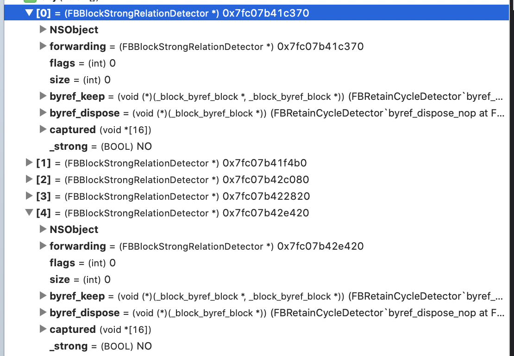

Understand How MLeaksFinder and FBRetainCycleDetector automatically detect memory leaks
Background
Memory is important resource in iOS. If a application uses too much memory, exceeding the limit based on the device, the iOS system will kill our App, by sending SIGKILL signal. Besides, minimizing memory usage not only decreases application’s memory footprint, but also reduce the amount of CPU time it consumes. These are mentioned in several WWDC sessions.
- WWDC: performance and power optimization
- Advanced Memory Management Programming Guide
- https://developer.apple.com/videos/play/wwdc2018/219
- https://developer.apple.com/videos/play/wwdc2018/416/
https://developer.apple.com/videos/play/wwdc2020/10078/?time=256
Obviously, it is important to keep memory under control. In our daily life, we usually use Xcode memory debugger tool and instruments to detect memory leaks. Basically, lots of manual work. A better to integrate memory leak detection into internal test phase or regression phase. The earlier we detect the issue, the more time we got to fix it. The less efforts we put in checking memory leaks, the more likely we keep our app away from memory leaks. Using
MLeaksFinderandFBRetainCycleDetectoris a good solution.
What is MLeaksFinder for?
MLeaksFinder is an light-weight tool from WeChat team, Tencent. It automatically finds leaks in some specific objects. When leaks happening, it will present an alert showing the leaked object and backtrace.
What does MLeaksFinder do under the hood?
The basic idea is to set a timer when the object is about to be released. When the timer is triggered, checked if the reference to the object is still valid. If it is, it turns out this object is leaked. Then, it uses this leaked object as seed object to FBRetainCycleDetector to figure out the retain cycle using. Actually, I found lots of articles introducing MLeakdsFinder are Chinese and outdated. While its source code is a bit easy to read.
Basing on this idea, MLeaksFinder has several categories for these classes:
- NSObject+MemoryLeak
- UIApplication+MemoryLeak
- UINavigationController+MemoryLeak
- UIPageViewController+MemoryLeak
- UISplitViewController+MemoryLeak
- UITabBarController+MemoryLeak
- UITouch+MemoryLeak
- UIView+MemoryLeak
- UIViewController+MemoryLeak
Take UIViewController as an example, it swizzles viewDidDisappear: method, then checks if current view controller have been popped by UINavigationController. Because the view controller isn’t necessarily popped from view controller stack when viewDidDisappear: called. Maybe, another view controller just has been pushed into the view controller stack, cover it and showing on the screen.
1 | - (void)swizzled_viewDidDisappear:(BOOL)animated { |
kHasBeenPoppedKey tag here is set by UINavigationController, code here.
As this pic demonstrates, if the view controller was released, the reference the block captured 2 seconds ago is nil. If this view controller isn’t released, strongSelf here would be a valid base address to it. Then MLeakFinder will show an alter to warning users.
We have talked about view controller, how about views? Well, in willDealloc method in UIViewController, MLeaksFinder will run self.view’s willDealloc; then check subviews Array. Basically, the view tree in this view controller will be traversed through and checked.
1 | @implementation UIView (MemoryLeak) |
If you enable the FBRetainCycleDetector through macro, the current leaked object will be the seed object for FBRetainCycleDetector, which will detect the retain cycle.
What is FBRetainCycleDetector for?
Facebook has a dedicated article about the FBRetainCycleDetector
Finding retain cycles in Objective-C is analogous to finding cycles in a directed acyclic graph in which nodes are objects and edges are references between objects (so if object A retains object B, there exists reference from A to B). Our Objective-C objects are already in our graph; all we have to do is traverse it with a depth-first search.
So, in order to traverse the directed graph, how to get neighbors of each node? How to get objects each node references? For each node in the graph, it could be either an object or block.
References in object
strong ivars
For objects, FBRetainCycleDetector get its ivar list from the object.
The first thing we can do is grab the layout of all an object’s instance variables (the “ivar layout”). For a given object, an ivar layout describes where we should look for other objects that it references.
1 | const uint8_t *fullLayout = class_getIvarLayout(aCls); |
- Because
class_copyIvarListwon’t include instance variables declared by superclasses. This method has to get ivar list for current, its superclass, all the way up to its ancestoiicoder - get strong ivar by analyzing ivar layout
- cache ivar list in a map,
<Class, NSArray<FBObjectReference>>
Let’s understand it deeper by taking an example. For the following class, there are 4 strong references to others, 2 weak reference.
1 | @interface _RCDTestClassWithMixedWeakAndStrongProperties : NSObject |
using class_copyIvarList, we can see its Ivar list. Each pointer is 8-byte in memory in 64-bit device, we an see the offset for first ivar to the class base address is 8 bytes; the second ivar is 16 bytes, the third one is 24bytes, etc.
Then, use class_getIvarLayout to get ivar layout
1 | const uint8_t *fullLayout = class_getIvarLayout(aCls); |
The full layout is
1 | "\x03\x11" |
- In hexadecimal figure
\x03, the high bits represents the number ofnon-strongivar, the lower bits represents the number ofstrong ivar.\x03indicates that there are zero non-strong ivar and 3 strong ivar,_object1,_object2,_object3in this case. x11claims that there comes 1 non-strong ivar, weak_object4in above declaration; and then follows 1 strong ivarobject5
The following method is to parse ivar layout according to this rule and get a set of NSRange for index and length for strong ivars in this class. One range is 1 to 3 and the other is 5.
1 | static NSIndexSet *FBGetLayoutAsIndexesForDescription(NSUInteger minimumIndex, const uint8_t *layoutDescription) { |
| Idx | Weak/strong | |
|---|---|---|
| 1 | strong | object1 |
| 2 | strong | object2 |
| 3 | strong | object3 |
| 4 | weak | object4 |
| 5 | strong | object5 |
| 6 | weak | object6 |
For the above case, the ivar layout is "\x03\x11"
| upperNibble | lowerNibble | currentIndex | NSRange | |
|---|---|---|---|---|
| x03 | 0 | 3 | 1 | {1, 3} |
| x11 | 1 | 1 | 5 | {5, 1} |
Parsing ivar layout to filter out the 4th and 6th ivar and get a set of index range for strong ivar. The result is two range, {1, 3} and {5, 1}
1 | <NSMutableIndexSet: 0x7fb7aea8ef40>[number of indexes: 4 (in 2 ranges), indexes: (1-3 5)] |

There are other interesting cases in the FBClassStrongLayoutTests.mm, the ivar type could be structure or block, and it could be weak as well.
References to associated objects
FBRetainCycleDetector hooks the calls, objc_setAssociatedObject and objc_removeAssociatedObjects. Then it store objects and a set of pointers to strongly referred associated objects into a global map.
1 | using ObjectAssociationSet = std::unordered_set<void *>; |
Using OBJC_ASSOCIATION_RETAIN and OBJC_ASSOCIATION_RETAIN_NONATOMIC to trace strong references only
1 | if (policy == OBJC_ASSOCIATION_RETAIN || |
Block and captured object
What attracts me most is the capability in FBRetainCycleDetector to detect leaked blocks and its reference. Amazing method to get references from the block and strong reference layout in block.
What we can use is application binary interface for blocks (ABI). It describes how the block will look in memory. If we know that the reference we are dealing with is a block, we can cast it on a fake structure that imitates a block. After casting the block to a C-struct we know where objects retained by the block are kept.
ABI for block
First of all, let’s take a look at the Block Literal.
For a block like this
1 | ^ { printf("hello world\n"); } |
It will be compiled into
1 | struct __block_literal_1 { |
and
1 | struct __block_literal_1 _block_literal = { |
This is the initialization of the block literal structure.
What if the block has reference to others?
- Case 1: Variables are imported as
constcopies.
1 | int x = 10; |
It will be compiled into
1 | struct __block_literal_2 { |
1 | struct __block_literal_2 __block_literal_2 = { |
We can see the variable x is appended at the end of __block_literal_2 structure.
- Case 2: Variables of
__blockstorage class are imported as a pointer to an enclosing data structure. see more here)
From the above cases, we can see in the descriptor structure __block_descriptor_2, the Block_size field is sizeof(struct __block_literal_2) . This is a very import field. FBRetainCycleDetector uses it to get the number of pointers inside
1 | void (*dispose_helper)(void *src) = blockLiteral->descriptor->dispose_helper; |
Let’s take a look at a test case here. Supposed a block captures an object from outside.
1 | NSObject *object = [NSObject new]; |
The block literal is like this
1 | struct BlockLiteral { |
1
2(lldb) p blockLiteral->descriptor->size
(unsigned long) $0 = 40
- The value of
blockLiteral->descriptor->sizeis 40, indicating the block 40 bytes in memory; intis 32 bit,flagsandreservedwill be put together into one word, 8 bytes in 64bit processor device.- In ARM64 device, the pointer size a
8bytes. - So it needs 5 pointers to fill out the fake object.
We create an object that pretends to be a block we want to investigate. Because we know the block’s interface, we know where to look for references this block holds. In place of those references our fake object will have “release detectors.” Release detectors are small objects that are observing release messages sent to them. These messages are sent to strong references when an owner wants to relinquish ownership. We can check which detectors received such a message when we deallocate our fake object. Knowing which indexes said detectors are in the fake object, we can find actual objects that are owned by our original block.
Create detector for each of the pointer in the faked object.
1 | // Create a fake object of the appropriate length. |
Now faked object obj contains 5 references to 5 FBBlockStrongRelationDetector instances. These 5 detectors are newly created to detect whether the pointer inside obj is strong or not. They are not the original block object in your code, but with same memory layout and reference retain policy.
1 | (void *[]) obj = ([0] = 0x00007fc07b41c370, [1] = 0x00007fc07b41f4b0, [2] = 0x00007fc07b42c080, [3] = 0x00007fc07b422820, [4] = 0x00007fc07b42e420) |

Then, try to dispose the faked object.
1 | @autoreleasepool { |
The disposing of the fake object actually triggers releasing of those detectors if they are strongly referred by the fake object only. In FBBlockStrongRelationDetector, release message has been overridden and set _strong ivar to YES to mark the related strong reference in the blockLiteral
1 | FBBlockStrongRelationDetector |

Finally get the index of the strong reference of current block by figuring out in which FBBlockStrongRelationDetector, _strong is YES.
1 | <NSMutableIndexSet: 0x7fc07b41f560>[number of indexes: 1 (in 1 ranges), indexes: (4)] |
Detect cycle
To detect the cycle of objects, it is doing DFS over graph of objects. code here.

Impact on memory footprint
- MLeaksFinder is light-weight. It has few impact on memory footprint
- FBRetainCycleDetector has impact on the memory footprint. The upside is that MLeaksFinder triggers DFS in FBRetainCycleDetector on when the user click
Retain Cyclebutton in the alter. After the Alert is dismissed, most of the memory usage will be gone.
Summary:
- FBRetainCycleDetector is quite powerful. It can even detect leaks related to Blocks. But it is a bit slow since it uses
DFSalgorithm to traverse the object tree. Besides, there is potential risks of data race in associated manager. - MLeaksFinder is simple but tricky. So once it detects the leaked object, it use FBRetainCycleDetector to detect the retain cycle. Then it shows the alter.
- We can use
MLeaksFinderto detect some seed objects. and provide FBRetainCycleDetector with these candidate objects from which it will start detection.
Author : RY Zheng
Link : https://suelan.github.io/2021/03/19/20210319-FBRetainCycleDetector/
License : MIT